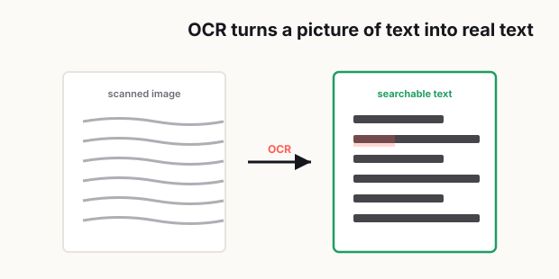

Scanned PDFs Are a Mess: Here's How to Make Them Searchable
A scanned PDF usually looks fine right up until the moment you actually need to do something with it. That's when the problem shows up. You try to search for a name, nothing happens. You try to copy a paragraph, and all you get is an empty result or a random mess of characters. You try to find one invoice number in a 70-page file, and suddenly you're scrolling page by page like it's 2004.

That's the annoying thing about scanned PDFs. On the surface, they look digital. In practice, many of them behave like a stack of paper someone happened to save on a computer. The file exists, sure, but it isn't really working for you. It can't help you move faster, search smarter, or pull out the information you need when time matters.
If you've ever dealt with scanned contracts, receipts, manuals, school forms, government letters, or old office records, you've probably felt this pain already. A scanned PDF is often the document format people use when they want to preserve the look of a page, but that same "frozen" look is exactly what makes it hard to work with later.
The good news is that a messy scanned PDF can often be fixed. Not perfectly every time, but enough to turn it from a dead file into a useful one. The key is understanding what a scanned PDF really is, what OCR actually does, and why scan quality makes such a huge difference.
Across two decades of IT support — most days fielding well over 400 requests from people in all sorts of countries — the scanned-PDF complaint was one of the most repetitive I heard: someone has a long scan and simply can't search it for the one line they actually need.
A lot of the confusion I had to clear up was about where OCR even happens. People assumed they had to run Acrobat on their PC to do it, when in most offices the copier or scanner can run OCR on its own — and from a clean paper original you can also OCR a scan into Word afterward. The part I explained most often was the catch underneath all of it: a plain scan is just a picture of the page, so until OCR runs there's no text to search or copy — and even then OCR isn't perfect, especially on busy layouts.
— Hill, 20 years in IT supportWhy scanned PDFs are basically just images
Here's the simplest way to think about it: a lot of scanned PDFs are not documents in the way most people imagine. They are collections of pictures.
When you place a paper document on a scanner, the scanner is not reading the meaning of the words. It is capturing light and shape. It sees the page the same way a camera sees a sign on the street. It records what the page looks like, not what the words are supposed to mean.
That distinction matters more than people expect.
A normal digital document usually contains real text data. The computer knows that a certain group of characters spells a name, an address, or a sentence. That's why you can highlight text, search for a word, or paste a paragraph into another app. But in a scanned PDF, the computer often just sees a flat image. To the machine, a paragraph is just a pattern of dark marks on a light background.
That's why scanned PDFs feel so frustrating. They look readable to a human, but they are often unreadable to software.
This is also why two PDFs can look almost identical and still behave very differently. One file may let you search every word instantly. Another may show the same page visually but give you nothing when you hit Command+F or Ctrl+F. The difference is not the appearance. The difference is whether the file contains actual text data behind the page.
What OCR is in plain English
This is where OCR comes in.
OCR stands for Optical Character Recognition, which sounds technical, but the basic idea is simple: OCR tries to look at the letters in an image and convert them into machine-readable text.
In plain English, OCR is the step where software looks at a scanned page and says, "I think this shape is an A, this one is an R, this one is a 7, and this whole line probably forms a sentence." Once that happens, the PDF becomes much more useful. You can search it, copy text from it, and sometimes even edit parts of it depending on the app you use.
A good way to picture OCR is this: scanning creates the photo, and OCR tries to translate the photo into text your computer can understand.
That doesn't mean OCR is magic. It's helpful, but it's still guessing based on the quality of the image it receives. If the scan is clean, straight, high contrast, and easy to read, OCR can work surprisingly well. If the scan is crooked, dark, blurry, shadowy, or full of handwriting, the results can go downhill fast.
This is why people sometimes think OCR is broken when the real issue is the input file. Bad scans produce bad recognition. The software can only do so much with a page that already looks rough to a human eye.
When OCR works well and when it struggles
OCR usually works best when the original page has a few things going for it: typed text, clear spacing, high contrast, minimal background noise, and a straight scan. Printed letters on white paper are ideal. Clean invoices, forms, letters, and reports are usually good candidates.
It also tends to do well when the font is common and the layout is predictable. Blocks of text, clear headings, tables with visible lines, and standard office documents are easier for OCR systems to handle.
Where OCR starts to struggle is when the page gets messy.
For example, it may have trouble with:
- Skewed scans where the page is tilted.
- Faint text or low contrast pages.
- Dark shadows near the edges from phone camera scans.
- Handwriting, especially messy handwriting.
- Old documents with stains, folds, or faded ink.
- Multi-column layouts where text order is confusing.
- Tiny fonts or low-resolution scans.
- Pages with stamps, signatures, and overlapping marks.
One common problem is that OCR may get "close enough" without being truly accurate. That can be dangerous. If you're just trying to search a file for a keyword, a few errors may not matter much. But if you're extracting legal text, invoice totals, names, serial numbers, or account details, even a small recognition mistake can create real problems.
That's why searchable does not automatically mean reliable. A file can become searchable and still contain OCR errors you need to catch.
How to improve scan quality before recognition
If you want better OCR results, the smartest move is to improve the scan before expecting the software to perform miracles.
A lot of people do this in the wrong order. They start with a bad file, run OCR, get poor results, and then assume the technology is useless. In reality, OCR is often only as good as the page image it receives.
Start with resolution. If the scan is too low resolution, letters lose definition. Small details get blurred together, and characters that should be distinct start to look alike. That's when "8" becomes "B," "I" becomes "1," or "rn" becomes "m." Higher resolution usually gives OCR a better chance to separate shapes correctly.
Next, pay attention to lighting and contrast. The text should stand out clearly from the background. Gray paper, uneven shadows, and washed-out scans make recognition harder. If the page looks dull or dirty, increasing contrast can make the text easier for OCR software to detect.
Straightness matters too. A tilted page may still be readable to you, but the software may misread lines, split words strangely, or follow text in the wrong order. Auto-straightening or deskewing can make a huge difference.
If you're scanning with a phone instead of a flatbed scanner, be extra careful. Phone scans are convenient, but they introduce common problems: shadows from room lighting, warped edges, perspective distortion, and inconsistent focus. Those issues can all hurt OCR accuracy. If possible, scan in bright, even light and keep the device directly above the page instead of at an angle.
Another underrated fix is cleaning up the page itself before scanning. If there are folded corners, pen marks, sticky notes, wrinkles, or smudges, they can interfere with recognition. Even something as simple as flattening the paper and rescanning can improve results more than people expect.
Fixing skewed pages, shadows, and low contrast
This is where a lot of scanned PDFs go wrong.
A skewed page seems minor until you realize OCR reads in lines and patterns. When the text is angled, those patterns become less predictable. A few degrees of tilt may not ruin everything, but across an entire document, it can lower accuracy enough to make the file frustrating to use. Straightening the page before running OCR is one of the highest-impact fixes you can make.
Shadows are another big one, especially in phone-captured PDFs. If the edges of the page are darker than the center, the software may treat some letters as incomplete or merge parts of text into the background. This often happens near the spine of books, along folded pages, or on documents photographed under overhead light. Cropping the page more tightly and adjusting brightness can help reduce that noise.
Low contrast is a quieter problem, but it matters a lot. If black text sits on a grayish background, or if faded ink barely stands out from the page, OCR may miss letters entirely. Boosting contrast can make the difference between unreadable OCR and usable OCR.
If the file is especially messy, it helps to think in layers:
- Fix orientation.
- Crop unnecessary borders.
- Improve brightness and contrast.
- Reduce shadows and visual noise.
- Then run OCR.
That order usually works better than throwing OCR at the original file and hoping for the best.
Also, don't ignore page consistency. A 40-page document with mixed scan quality can create uneven OCR results. One page may be perfect, and the next may be nearly useless. If this is an important file, spot-check multiple pages before assuming the entire document was recognized correctly.
How to check OCR results before relying on them
This is the step most people rush, and it's exactly where avoidable mistakes happen.
Once a PDF becomes searchable, it's tempting to assume the work is done. But searchable is just the beginning. Before you rely on the contents, you should test the file in a few practical ways.
First, search for several words you can already see on the page. Don't just search a big obvious heading. Search names, numbers, and smaller words from different parts of the document. If search works only sometimes, the OCR may be incomplete.
Second, try copying a paragraph from the middle of a page and paste it into a plain text editor. Read it carefully. Do the words come through correctly? Are line breaks weird? Are numbers missing? This quick test tells you a lot about how trustworthy the OCR output actually is.
Third, inspect sensitive fields manually. If the document includes dates, dollar amounts, ID numbers, addresses, case numbers, or account details, verify them one by one. OCR errors often hide in the exact places that matter most.
Fourth, watch for common character substitutions. These happen all the time:
- O and 0
- I and 1
- B and 8
- S and 5
- rn and m
These mistakes may seem small, but they can completely change a code, number, or name.
It's also smart to test the file on the device you actually plan to use. Sometimes a PDF appears searchable in one app but behaves differently in another. If your goal is long-term storage, client delivery, or team collaboration, open it in more than one viewer before calling it done.
If the OCR still looks sloppy after cleanup and rescanning, that's your signal that the original document may simply be too poor for high-confidence recognition. At that point, the best move may be a manual review, selective retyping, or rescanning from the original paper source if possible.
The real goal is usability, not perfection
This is the part people often miss. The goal of OCR is not to create a magical, flawless replica of a document every single time. The real goal is to make the file more usable.
Sometimes that means full-text search works and saves you twenty minutes. Sometimes it means you can pull key paragraphs into another system without retyping everything. Sometimes it means archived records become easier to organize and retrieve later.
That's already a huge win.
Not every scanned PDF can be rescued perfectly, especially if the original paper was damaged or the scan quality is poor. But a lot of documents can be improved enough to become practical again, and that matters more than chasing perfection.
If you regularly work with scanned invoices, contracts, receipts, forms, or records, getting this process right pays off fast. It saves time, reduces frustration, and makes your document archive feel less like a digital junk drawer.
A scanned PDF should not trap information inside a picture. If the document is important enough to keep, it's usually important enough to make searchable too.
Related reading: Scanned files are often huge — here's how to compress a PDF without ruining quality — and once it's searchable you may want to annotate or edit it without expensive software.
Frequently asked
Why can't I search text in a scanned PDF?
Most scanned PDFs are image-based files. They may look like documents, but they often do not contain real machine-readable text until OCR is applied.
What does OCR mean in simple terms?
OCR stands for Optical Character Recognition. It is the process that analyzes text inside an image and converts it into searchable, selectable digital text.
Why does OCR sometimes give inaccurate results?
OCR accuracy depends heavily on scan quality. Crooked pages, shadows, low contrast, faded ink, handwriting, and low resolution can all make text recognition less accurate.
How can I improve OCR accuracy on scanned PDFs?
You can improve OCR accuracy by using a higher-resolution scan, straightening tilted pages, cropping borders, reducing shadows, increasing contrast, and rescanning poor-quality pages when possible.
How do I check if OCR worked correctly?
Test search on multiple words, copy and paste text into a plain text editor, and manually verify important details like names, dates, invoice totals, and account numbers before relying on the file.